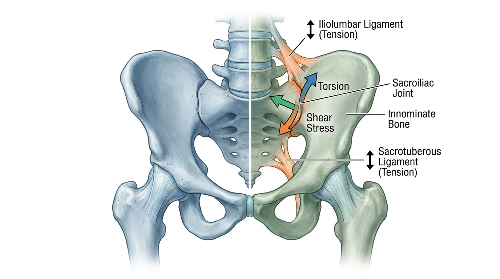

골반 비틀림으로 인한 천장관절 불안정성과 둔부 방사통
이는 요추 추간판이 아닌 골반뼈(장골)의 전방 또는 후방 회전으로 인해 천장관절(SIJ)이 불안정해지면서 발생하는 방사통일 가능성이 높다. 골반의 좌우 비대칭이 관절 주변 인대에 비정상적인 부하를 가해 둔부 및 대퇴부 후면에 통증을 유발한다.
임상 현장에서 요추 5번-천추 1번(L5-S1) 신경근병증으로 오인되는 둔부 및 대퇴부 후면 통증의 상당수는 실제로 천장관절(Sacroiliac Joint, SIJ)의 기계적 불안정성에서 기인한다. 특히 골반을 구성하는 장골(Innominate bone)이 전방(Anterior, AS) 혹은 후방(Posterior, PI)으로 회전 변위를 일으키는 골반 비틀림(Pelvic Torsion) 현상은 관절의 정렬을 무너뜨리는 핵심 원인으로 지목된다. 본 문서에서는 골반 비대칭이 유발하는 천장관절 불안정성의 생체역학적 기전과 이를 감별하고 교정하는 임상적 접근법을 다룬다.
1. 장골 회전과 천장관절 불안정성의 생체역학적 기전
천장관절은 상체의 하중을 하지로 전달하는 중요한 구조물로, 일상적인 움직임에서도 미세한 가동성(Micro-motion)을 유지해야 정상적인 기능을 수행한다. 그러나 장골이 전방 회전(AS) 또는 후방 회전(PI)되는 골반 비틀림이 발생하면, 관절을 지지하는 장요인대(Iliolumbar ligament)와 천결절인대(Sacrotuberous ligament)에 비대칭적인 장력이 가해진다[1]. 이러한 인대의 과도한 신장 혹은 이완은 관절낭 내 압력 분포를 왜곡시켜 관절 적합성(Congruency)을 저해하고, 결과적으로 관절의 미세 불안정성을 야기하는 핵심적인 병리 기전으로 작용한다.

천장관절의 해부학적 구조를 심도 있게 분석한 연구에 따르면, 관절면의 요철 구조(Ridges and grooves)는 물리적 잠김(Locking) 기전을 통해 안정성을 확보하도록 설계되어 있으나, 골반 비틀림으로 인한 좌우 하중 불균형은 이러한 자연적 잠김 기전을 파괴하고 부하 전달 체계를 붕괴시킨다[2]. 이는 관절 자체의 통증뿐만 아니라 주변 근막 및 신경 구조에 방사통을 유발하는 직접적인 배경이 된다.
2. 둔부 및 대퇴부 후면 방사통의 임상적 특징
천장관절 불안정성으로 인한 통증은 주로 하부 요추(L5)와 천장관절 접합부 부위에서 시작되어 둔부(Buttock)와 대퇴부 후면(Posterior thigh)으로 방사되는 양상을 보인다. 이러한 통증 패턴은 좌골신경통이나 요추 추간판성 통증과 유사하게 나타나 임상적 혼동을 야기하는 경우가 잦다. 그러나 천장관절 유래 통증은 대부분 슬관절(무릎) 하방으로는 진행되지 않으며, 특정 자세 변화(예: 한쪽 다리로 서기, 계단 오르기)에서 통증이 급격히 악화되는 특징적인 패턴을 보인다.
💡 Q. 천장관절 불안정성과 허리 디스크(추간판 탈출증) 통증은 어떻게 구별하나요?
천장관절 유래 통증은 대개 특정 지점(PSIS 하방)을 손가락으로 지목할 수 있는 국소적 압통을 보이는 반면, 추간판 탈출증은 신경 분절을 따라 감각 이상이나 근력 저하가 동반되는 경우가 많다. 정확한 감별을 위해서는 아래에 서술된 이학적 검사가 필수적으로 요구된다.
3. 진단적 감별: 유발 검사를 통한 정밀 평가
천장관절 기능장애를 요추 추간판성 병변과 감별하기 위해서는 특정 자세에서 통증 유발 여부를 확인하는 도수 검사가 시행된다. 대표적으로 파베르 검사(FABER Test)는 고관절을 굴곡, 외전, 외회전 시켰을 때 서혜부나 후방부에 통증이 유발되는지 확인하는 방법이며, 갠슬렌 검사(Gaenslen's test)는 골반의 비대칭적 회전 스트레스를 가하여 관절의 불안정성을 평가하는 검사법이다.
| 구분 | 천장관절(SIJ) 기능장애 | 요추 추간판성 병변 |
|---|---|---|
| 통증 위치 | PSIS 하방, 둔부 국소 압통 | 정중앙 요추부, 신경 분절 따라 방사 |
| 유발 검사 | FABER, Gaenslen's Test 양성 | SLR(하지직거상) 검사 양성 |
| 신경학적 이상 | 대부분 정상 | 감각 저하, 근력 약화 동반 가능 |
| 통증 확산 범위 | 대퇴부 후면까지 (슬관절 이하 드묾) | 발끝까지 방사 가능 |
이러한 이학적 검사를 통한 정밀한 진단은 불필요한 요추 수술적 개입을 방지하고, 골반 구조 자체의 교정을 통한 근본 원인 접근을 가능하게 하는 중요한 임상적 단서를 제공한다.
4. SART 프로토콜 기반의 관골 재정렬 치료 원리
바디올한의원의 생체역학적 공간 감압 추나(SART Protocol)는 골반 비틀림으로 인한 천장관절 불안정성에 대해, 전위된 관골(Innominate bone)의 위치를 정상 궤도로 되돌리는 도수적 정복(Manual Reduction) 기법을 적용한다. 이는 단순히 통증 부위를 압박하는 방식이 아니라, 후방 회전(PI)되거나 전방 회전(AS)된 장골을 정밀하게 가동술로 교정하여 좌우 골반의 대칭성을 회복시키는 데 그 목표를 둔다.
구체적으로 관절 불균형이 심한 경우, 생체역학적 공간 감압 추나(SART Protocol)를 통해 골반 부정렬을 교정함으로써 천장관절 및 요추부에 가해지는 생체역학적 하중을 좌우로 재분배하는 기전이 적용된다[1]. 이러한 정렬 교정 과정을 통해 과도하게 긴장되었던 천결절인대의 장력이 정상화되고, 이완되었던 관절낭이 다시 압박력을 회복하여 관절의 안정성이 증진되는 효과를 기대할 수 있다[2].
생체역학적 공간 감압 추나(SART Protocol)는 골반 비틀림으로 인한 천장관절 불안정성에 있어 수술적 개입 전 안전하게 고려할 수 있는 비수술적 보존 치료 대안 중 하나로 평가되며, 정확한 관절 진단에 기반한 맞춤형 접근을 원칙으로 한다.
5. 치료 이후 관리 및 재발 방지 원칙
관골의 정렬이 회복된 이후에도 골반 주변 근육(대둔근, 이상근 등)의 근력 불균형이 지속되면 비틀림이 재발할 가능성이 존재한다. 따라서 시술 후에는 골반 중립 자세를 유지하는 코어 안정화 운동과 함께, 좌우 다리 길이 차이를 유발하는 습관적 자세(짝다리, 다리 꼬기 등)를 교정하는 생활 관리가 병행되어야 한다. 이는 재정렬된 관절의 안정성을 장기적으로 유지하는 데 필수적인 요소로 작용한다.